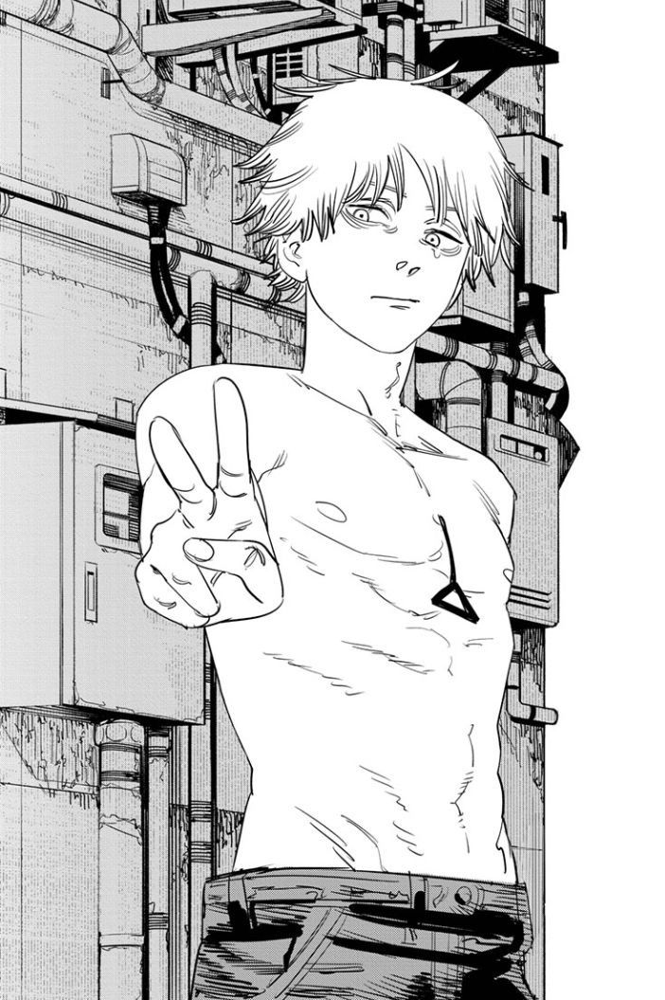
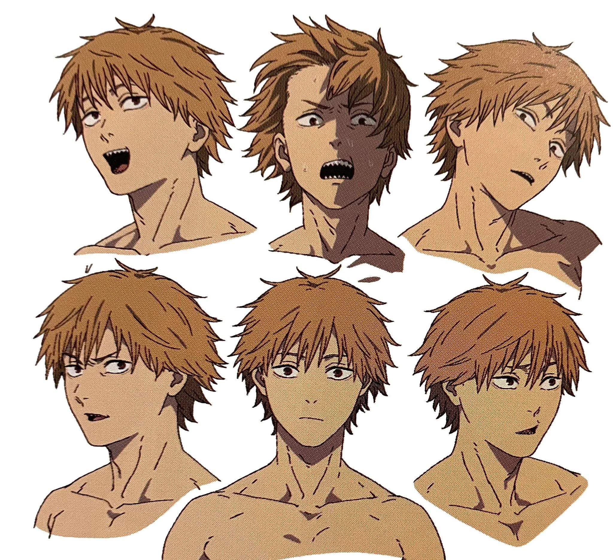
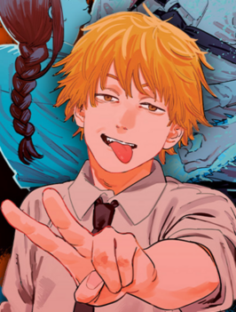

Denji Artwork
 
Introduction
Denji is a teenage boy living in severe poverty after the death of both his parents. After his Father's passing, he was passed on the debt that
his father owed to the Yakuza. In order to repay his dead father's debts, he becomes a devil hunter, hunting down devils wanted throughout the region
and collecting his payments through a debt collector associated with the Yakuza. Alongside him, Denji hunts with Pochita. Pochita 'Chainsaw Devil' finds
Denji shortly after his Father's passing and the two form an alliance to fight Devils.
After Denji is betrayed by the Yakuza, Pochita sacrifes himself for Denji becoming his heart so that he can survive and Pochita believes Denji can live out
his simple dreams he's been longing for so long. Pochita and Denji make an official contract, allowing Denji to transform into Chainsaw Man, a human devil
hybrid! Shocked after Denji's recovery, the Zombie Devil panics and Denji takes down the full hoard.
In critical condition after the intense fight, Denji loses alot of blood, causing his chainsaw's to retract and become weak. He is found by Public Safety officer, Makima.
After the group discover Denji's newfound abilities, he is taken under Makima's wing to join Public Safety as an official Devil Hunter to help defend Japan against
lethal devil threats.
Relationship
Makima
Denji starts to form feelings for Makima after she enrolls him in Public Safety, hes convinced its GOING TO HAPPEN, but is experience limerance as he has never had
an interaction with anyone his own age. However, Makima is solely out for his heart as she is aware of his power and ability. She takes advantages of her contract with the
control devil in order to manipulate Denji into falling in love with her.
Later, in volume 10, Denji learns Makima's true motives as she kills two of his best friends to further manipulate him into her master plan. However, Denji overcomes his lust
for Makima and finally understands her real motives behind housing Denji. Denji is able to successfully assassinate Makima due to being unable recognise his scent. Makima is murdered
and Denji cooks and eats her in order to full get rid of her and all the pain she caused him.
Reze
Reze makes her debut in volume 5 of the Manga and is teased during the finale of episode 12. Reze and Denji bond together at a local cafe she works at, the two quickly begin
flirting and Reze shows Denji whats its like to be a normal teenage. She teaches him how to read, swim and just fit in like a 'normal' teenager like her. It is quickly
revealed Denji has been tricked once AGAIN, as Reze is also after Denji's heart.
The two share a semential moment as they kiss infront of a firework show and she says they should run away together in order to escape the harsh reality of life, as they kiss
Reze bits Denji's tongue off, revealing her true identity as the Bomb Devil. Reze causes mayhem as she attempts to capture Denji but is unsuccessful. Even after Reze has LITERALLY TRIED
TO KILL HIM, he still is longing to spend time with her but contemplates returning to her cafe job. When he eventually plucks up the courage, it is too late and seems she will not be returning
.
Friendships
Aki Hayakawa
Aki Hayakawa is a devil hunter who worked under Makima's unit during his time with Public Safety. Denji's first day of the job they are assigned as a pair and instructed to look after
Denji. The two instantly clash but overtime grow fonder and fonder of one another despite their major differences.
Power
Power is a fiend who has a contract with the Blood Devil, she is apart of Makima's experimental Division that Denji is assigned to upon his arrival. The two are paired together after
Denji and Aki's working abilties are questioned. The two grow closer over time bonding over their pets, silliness and devil hunting skills!
Abilities
After Denji formed his Contract with Pochita, Pochita became his heart instead of his own. With this, and enough blood Denji is able to transform into Chainsaw Man by pulling the cord
on his chest.
Denji

Name : Denji
Age: 16-18
Gender: Male
Birthplace: Japan
Status: Alive
Devils Contracted;
-Chainsaw Devil
-Blood Devil